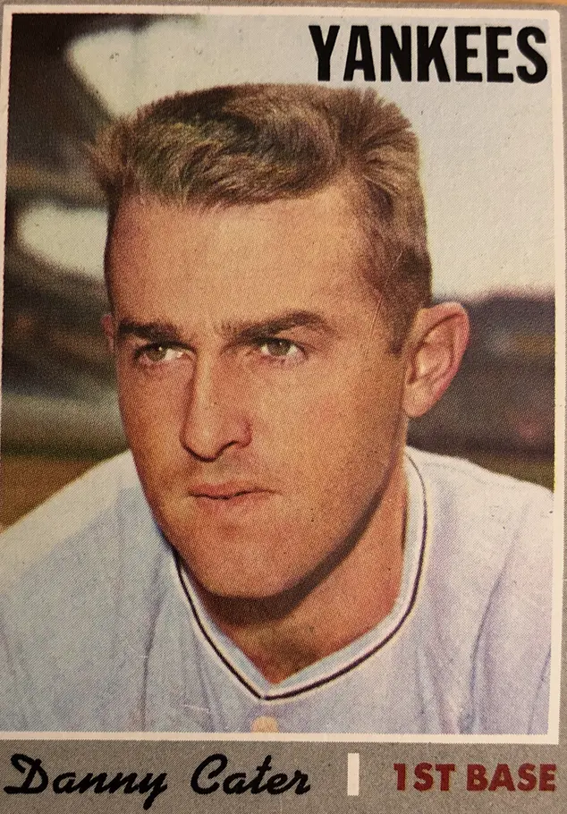

Danny Cater
Career Highlights & Facts
(Facts are AI-generated and may require verification)
- Used a 36-inch, 36-ounce thick-handled bat reminiscent of the Deadball Era.
- Maintained a motionless, closed batting stance while waiting for pitches.
- Earned a reputation as a professional hitter who preferred to let a bat do the talking rather than vocal leadership.
Would you like to find out more about Danny Cater?
As a rookie with the 1964 Philadelphia Phillies, Danny Cater said that “hollering or making noise” just didn’t fit into his style on the field. “If I told you I let my bat do my talking – that would sound corny,” he added.
Corny or not, over the course of his 12-year major-league career, Cater indeed let his bat do his talking, compiling a .276 lifetime batting average, 1,229 hits, and 519 RBIs. His hitting achievements led him to be described as a “professional hitter” who employed “a baseball bat with skill and adeptness … [and he was] proud of his hitting prowess”
(accomplished during a period when pitching dominated the game).
Cater’s pride in his “hitting prowess” was expressed quietly and without fanfare, much less any “hollering.” After he finished second in the 1968 American League batting race (albeit with an average 10 points under .300), Cater reflected that in the minor leagues he was told he would never make the majors because he “was too lackadaisical” and that he needed to “be a holler guy.”
“I tried it for a while,” said Cater, “and it didn’t work out.”
So he resolved to keep playing
his
way.
Perhaps a bit self-conscious of his high-pitched voice – he was referred to by teammates as the “Texas Tenor,”
Cater’s early experiments with “hollering” generally ended with humorous results.
Kerby Farrell
, his manager on the 1962 Buffalo Bisons, encouraged him to be a team leader. But whenever Cater would tell a pitcher to bear down, he would immediately add, “Kerby wants me to say that.”
Another example occurred in a Phillies spring-training game in 1964, when, in an attempt to become the team’s emergency third catcher, Cater volunteered to catch for an inning. Once behind the plate, he began to yell to pitcher
Chris Short
, “Attaboy Chris, give ’em the smoke, baby.” At that point third baseman
Dick Allen
, who had spent the previous season with Cater in Little Rock, exclaimed, “Holy smokes. That’s the most I’ve heard Cater say in a year.”
Over the course of his baseball odyssey, Cater rankled some of his managers (notably
Eddie Stanky
of the Chicago White Sox and
Bob Kennedy
of the Oakland A’s) as well as some fans (particularly in Boston) with his “laid back nature”
– which they took for a lackadaisical approach to the game.”
Cater’s response was that it wasn’t that he didn’t hustle, “[I]t’s just that I don’t make a lot of noise.”
On another occasion, exasperated with criticism that he didn’t care, Cater asked rhetorically, “What’s talking got to do with it? What’s hollering got to do with it? Quiet? The idea’s to do it with your bat and glove, not with your mouth. Talk’s cheap.”
A manager whom Cater won over with the way his bat did his talking was
Frank Lucchesi
, his skipper on the 1963 Arkansas Travelers, a Phillies farm team. Initially he described Cater as “[l]ackadaisical about everything … not the kind of kid who will impress you if you scout him from the stands.” However, after Cater’s .291 average led the regulars on the 1963 Travelers, Lucchesi said, “You have to know the kid to appreciate him.” Cater, he said, was “the best ‘dumb’ hitter in baseball.” ..; Cater “doesn’t care who’s pitching,
Bob Feller
or Joe Doaks. He’s just up there to hit anyone who throws.”
Cater’s batting stance was perhaps as much an extension of his personality as it was unorthodox for the era in which he played. He used a closed stance and remained almost motionless in the batters box as if transfixed. He wielded a 36-inch, 36-ounce thick-handled bat similar to those used in the Deadball Era. With his hands extended outward and the bat in a nearly vertical position, “free of any hint of anxiety or eagerness,” Cater would with “what appeared to be a lazy swing … [get in] front of the ball and,
thunk
, the clean functional base hits go looping or hopping off in all directions.”
With 90 percent of his hits being singles or doubles, a “typical” hit by Cater was described as “a line drive just out of the reach of a fielder, propelled with a swing that looks like he belched and the force from it moved the bat.” And further: “[T]he word for what Cater is not, is ‘explosive.’ ”
Cater’s lack of flamboyance and his overall laid-back style resulted in his becoming somewhat anonymous. His name was misspelled, or mispronounced as “Carter” so frequently that Carter became his nickname during his time with the A’s and Red Sox.
A
Sports Illustrated
story reporting on the 1968 batting race between Cater and
Carl Yastrzemski
referred to him as Carter in the headline. Some guests attending a banquet where Cater appeared mistook him for Don Carter, the bowler.
An exception to his anonymity was the time he spent in Boston with the Red Sox. After he was traded for pitcher
Sparky Lyle
, whose career blossomed with the Yankees, Cater was blamed for everything but the Boston Massacre.
Danny Anderson Cater was born in Austin, Texas, on February 25, 1940, to Scott Wallace and Henrietta Joseph Anderson Cater. His father played semipro baseball and softball. His mother played for a church team and, according to Cater, was “pretty good too.” “We were in one ballpark or another every day in the week.”
In 1956 Cater was named the MVP of the National Colt League championship tournament, going 16-for-23, though his Austin team lost to Evanston, Illinois.
At William B. Travis High School in Austin, Cater starred in both baseball and football. After graduation, the 5-foot-11, 175-pound Cater was signed by Phillies scout Hap Morse for the reported sum of $24,000. Sent by the Phillies to their short-season Class D rookie team in Johnson City, Tennessee. Cater played shortstop, led the league in runs scored, RBIs, and home runs, and earned the league’s Player of the Year award.
Promoted to the Bakersfield Bears of the Class C California League for the 1959 season, Cater was moved to second base, and was again among the league leaders in hitting. He spent the 1960 and 1961 seasons with the Williamsport Grays of the Class A Eastern League. Playing first base in 1960, Cater led all Eastern League first basemen in fielding average.
Moved to third base in 1961, his fourth position in four seasons, Cater batted .343 with a league-leading 193 hits, earning a spot on the Eastern League all star team. Among his teammates that season was fellow Austin native
Ray Culp
, who would be Cater’s teammate on the 1964 Phillies and the 1972 Red Sox. Describing their rivalry growing up in Austin, Culp recalled, “[Cater] never gave me any trouble,” while Cater said he “used to hit the heck out of [Culp].”
While with the Grays, Cater married a local woman, Gail Hawkins. She gave birth to their first child, Dana, in 1961. Two more daughters, Robyn and Amy, followed. Cater made Williamsport his home for many years, and worked a few offseasons in the communications department of the Little League Baseball organization.
Cater spent two years in Triple-A, with the Buffalo Bisons in 1962 and the Arkansas Travelers in 1963. He played at both third base and left field each year.
Despite hitting well at every level of the minor leagues and proving his versatility by playing four positions, Cater was left unprotected by the Phillies for the 1963 Rule 5 draft. When Cater was not picked by any other team, Phillies manager
Gene Mauch
said he was “tickled” not to lose him. In the winter of 1963-4, Cater won the MVP award in the Puerto Rican winter league.
Invited by the Phillies to spring training in 1964 as a nonroster player, Cater was one of six rookies who made the team’s 1964 Opening Day squad. Mauch planned to use him as a utilityman, calling him “a good breaking-ball hitter” who would have “no trouble doing the job.”
The 1964 Phillies were coming off their best record (87-75) since 1952 and highest finish (fourth place) since 1955. Led by the fiery Mauch, and with a blend of promising young players and talented veterans, the team had high hopes. Cater found himself starting in left field in a 5-3 Opening Day victory over the New York Mets, going 0-for-3. Over the next several months he played mostly in left field, where he was platooned with
Wes Covington
, and kept his batting average around .300. He was one of nine players used at first base by Mauch.
On July 22 Cater collided with Milwaukee Braves first baseman
Joe Torre
while trying to leg out a slow roller, and fractured his arm near the wrist. He was put on the disabled list, and was out until September 1. When he was hurt the Phillies were in first place by one game over the San Francisco Giants. Catcher
Gus Triandos
termed the Phillies thus-far magical season “The Year of the Blue Snow,”
as Mauch coaxed wins out of his group of supposed overachievers. Eventually the Phils suffered an epic ten-game losing streak that started with 12 games remaining and watched their 6½-game lead disintegrate as they finished one agonizing game behind the St. Louis Cardinals.
After September 1 return Cater started only three games. During the ten-game skid, he was 2-for-5 as a pinch-hitter. He finished the season with a .296 batting average and 13 RBIs in 60 games. Cater was the best pinch-hitter in the league among those who appeared more than 15 times, hitting .368 (7-for-19).
On December 1, two days after the Phillies obtained slugging first baseman
Dick Stuart
from the Boston Red Sox, Cater was traded along with shortstop
Lee Elia
to the Chicago White Sox for veteran pitcher
Ray Herbert
and minor leaguer
Jeoff Long
. Cater saw the trade as an opportunity to play regularly because the White Sox were strong on pitching, but lacked offense. Manager
Al Lopez
thought Cater would provide “that consistent hitting we’re looking for.”
As the regular left fielder, Cater hit over .300 for the first two months of the season, but ended the year with an average of .270. He did hit a career-high 14 home runs.
Lopez stepped down as the White Sox’ manager after the season and was replaced by Eddie Stanky, Cater’s quiet demeanor proved a problem for the scrappy Stanky. Danny appeared in just four games in April 1966 and it was May before he played regularly in left field. He never got on track offensively, and on May 27, with his average at .183 and only four RBIs, Cater was traded to the Kansas City Athletics for infielder
Wayne Causey
.
Playing regularly for the A’s, Cater finished the season with a .278 average, crediting his offensive improvement to the fact that he was “getting to play.”
He wrought some revenge on his ex-mates, by hitting .346 against the heralded White Sox pitching staff. Cater got along famously with Dark, and the A’s finished the season with 74 wins, moving up from last place to seventh.
Cater opened the 1967 season as the Athletics’ starting first baseman. In early May his .339 average garnered him
The Sporting News
’
American League Player of the Week honors. His season ended on September 17 when he was beaned by a fastball thrown by
Bobby Locke
of the Angels. It was the third time he had been hit on the head that season. When his season ended, Cater, the team’s leading utility player, was hitting .270 with 46 RBIs.
With the A’s in last place, a “players’ revolt” in late August resulted in Finley’s suspending pitcher
Lew Krausse
, firing Dark for refusing to discipline Krausse, and releasing first baseman
Ken “Hawk” Harrelson
(who signed with the pennant-winning Red Sox) “(We) didn’t have our minds on baseball,” Cater said of the team’s chaotic situation. “There was a meeting of our players every night to decide what we would say.”
After season, the A’s relocated to Oakland. Spring training opened under new manager Bob Kennedy, who decreed that rookies and second-year players would receive the first chance at every position. Despite hitting .300 in spring training, Cater was absent from the starting lineup on Opening Day.
Kennedy was not fond of Cater. “Danny hits only for Danny, not caring whether the team wins or loses as long as he gets his hits,” the manager said. He decried Cater’s ability to “have a computer-like recall of his entire batting record in 15 separate categories.”
(Teammate
Reggie Jackson
defended Cater. “That’s a bad rap,” the slugger said. “Every major leaguer knows his batting average within two points.”
)
Cater soon got into the lineup and had a fine season, batting .290 in 147 games. That season was referred to as the “Year of the Pitcher,” and featured low ERAs in both leagues. At midseason, with his average at .254, Cater felt that pitchers were “getting the outside corner” and that he was, for the most part, “playing pepper with the shortstop.”
He switched to a heavier and longer bat – 36 inches long and 36 ounces – and choked up, which he found gave him better bat control. His average climbed to .290 second only to Carl Yastrzemski’s league-leading .301 average. Cater made only five errors at first base for a .995 fielding percentage, the highest in the league, but Boston’s slick-fielding
George Scott
, with more than twice as many errors, won the Gold Glove award for first basemen.
In 1969 Cater hit over.300 for the first two months of the season, but tailed off badly to .262 at season’s end, though he did hit ten home runs with a career-best 76 RBIs. After the season Cater and infielder
Ossie Chavarria
were traded to the Yankees for pitcher
Al Downing
and catcher
Frank Fernandez
. Acquiring Cater was part of Yankee general manager
Lee MacPhail
’s attempt to boost the team’s right-handed power. Describing Cater as having “one of the smoothest strokes I’ve ever seen,” manager
Ralph Houk
saw his addition to the team as providing “that strong right-handed hitting we need so badly.”
Cater expressed self-confidence: “A
Pete Rose
I’m not and never could be. I know I don’t look like I’m hustling but I don’t think anyone around here will have any complaints.”
The Yankees used Cater mostly at first base. At the end of June he led the team with 44 RBIs and a .304 average. The Yankees finished the season with a record of 93-69, second place in the AL East. Cater’s .301 average was a career high, while his 76 runs batted in matched his career high. But he began the 1971 season badly. With his average in the low .200s, he described himself as “off stride and hitting under too many balls.”
During a brief layoff in June due to an ankle injury, and with his average at .219, Cater borrowed teammate
Ron Swoboda
’s smaller bat, and by September 11 he had raised his average to .276. His season ended that day when a pitch from
Rich Hand
of the Indians broke his finger. The Yankees dropped to fourth place. During spring training of 1972 they sent Cater and infielder
Mario Guerrero
to the Red Sox for left-handed reliever Sparky Lyle.
The Red Sox team Cater was joining had finished in third place in the American League East the season before, and his friend Ray Culp was on the pitching staff. Cater was glad because he hit better in
Fenway Park
than any other – .347.
The Red Sox envisioned Cater as their regular first baseman. Opening Day was delayed a week and a half by a players’ strike. When the strike was settled, the unplayed games were wiped off the schedule. No adjustments were made for the fact that different teams had different numbers of games scheduled prior to April 15 – which ultimately proved fatal for the Red Sox’ pennant chances. Things didn’t begin well for Cater. After going 0-for-4 in an 8-4 loss to Minnesota on May 7, and with a batting average of .120 after 14 games, he was benched by manager
Eddie Kasko
. (Cater told reporters, “They don’t wait long before they quit on you in Boston, do they?”
)
With his average in the low .200s as the season went into July, Cater received rough treatment from the Boston fans. His short, unspectacular swings at the plate, together with his slow moving style were interpreted as signs that he didn’t care. Adding fuel to this perception was the fact that Sparky Lyle kept saving and winning games for the Yankees on his way to capturing the 1972 Fireman of the Year Award. Cater wanted to hit with the same success he had always enjoyed at Fenway although he no longer faced the suspect Red Sox pitching that allowed him to compile those numbers. His frustration apparent, Cater added, “The way the fans greeted me you’d think I traded Lyle to the Yankees. … It’s not that I’m not trying as hard as the next guy. It’s the way it looks to the fans.”
Despite a losing record over the first three months of the season, and a number of injuries, on September 7 the Red Sox found themselves in first place, where they remained for all but one day in September. October began with the Red Sox a half-game ahead of the Detroit Tigers, as they faced each other in a season-ending three-game series. The Tigers clinched the pennant when they won the first two games of the series, and finished with a record of 86-70, a half-game better than the Red Sox’ final record of 85-70. The resolution of the schedule in April had left the Red Sox one possible win short.
Although Cater’s hitting stroke returned briefly in July, he was benched after hitting .221 over the first three weeks of August, and was replaced at first base by Carl Yastrzemski. Cater appeared in only one game after August 20, and finished the season with a .237 average and 39 RBIs, both career lows. Calling the 1972 season “a nightmare” and the “low point of my professional career,” Cater said he was particularly frustrated because “the team made its big run for the pennant and I was on the bench.”
Aside from Cater’s poor performance, the postseason fallout from the Boston fans and media was based more on how much better the Red Sox would have done had they kept Lyle (who finished with 35 saves, 9 victories, and a 1.92 earned run average).
Despite his being the subject of winter trade rumors, Cater was still on the Red Sox’ Opening Day roster for the 1973 season, albeit less of him, as over the winter he lost 20 pounds on a “water diet.”
After only two appearances in April, and a few in May, Cater began to play more regularly in June and responded well at the plate. For the season he hit a career high .313 in 63 games. With a final record of 89-73, the Red Sox finished in second place, eight games behind the Baltimore Orioles.
The Red Sox underwent a major facelift after the 1973 season, but Cater stayed on. To help hold his spot on the team, Cater came to spring training to work out as a backup catcher.
But he played in only 56 games and ended the season with a .246 average. On March 29, 1975, he was traded to the Cardinals for minor leaguer
Danny Godby
. The bitter nature of Cater’s Boston experience was reflected in a newspaper column by Ray Fitzgerald in the
Boston Globe
after his departure: “Cater is gone from Boston. … Danny just drifted away. Unhonored and unsung. … He’s gone and not one voice was raised in protest. … Cater might never have existed for all anyone cared about his leaving. He was, ‘Cater you bum.’ And ‘If that wasn’t the worst trade the Red Sox ever made, I’m
Tom Yawkey
’s nephew.’ He was our scapegoat, our tin can, our bull’s eye.”
Some particularly acrimonious Boston fans blamed the Lyle-Cater trade not only for the loss of the 1972 pennant but also for the loss of the 1978 pennant, and even the loss of 1975 World Series.
Cater saw the trade to the Cardinals not only as an opportunity for more playing time, but as a chance to reunite with his old Red Sox roommate, pitcher
John Curtis
.
The Cardinals planned to use Cater to spell rookie first basemen
Keith Hernandez
against left-handed pitchers; however, he made only occasional appearances and was released on waivers on June 28 after hitting .229 in 35 at-bats. Cater’s last major-league appearance was as a pinch-hitter in a 3-1 loss to the Reds on June 11, when he grounded out. A brief stint with the Cardinals’ Triple-A team at Tulsa ended with Cater being released on July 26 with a .214 average in 14 at-bats.
In 1976 Cater served as a hitting instructor for the Yankees at Syracuse. He left after one season and returned to his native Texas to become an accounts examiner in the office of the Texas comptroller of public accounts. Cater and his wife, Gail, were divorced in 1975, and he married Carolyn Gilchrist. They resided in Plano, Texas.
Despite his skill at the plate, “professional hitter” Cater played in anonymity for most of his career until the trade for Sparky Lyle caused him to live on “in infamy” among Red Sox fans. In light of all he accomplished, Danny “Carter” Cater deserves to be remembered for much more than that.
This biography is included in the book “The Year of the Blue Snow: The 1964 Philadelphia Phillies” (SABR, 2013), edited by Mel Marmer and Bill Nowlin. For more information or to purchase the book in e-book or paperback form,
click here
.
Ron Smith, “Cater Makes No Excuses Except at Plate,”
Philadelphia Inquirer
, June 25, 1964.
Jim Ogle, “Cater Philosophic Over His Future,”
The Sporting News,
August 28, 1971, 10.
Roy Blount, Jr., “The Name is Carter – er, Cater,”
Sports Illustrated,
May 19, 1969, accessed online:
http://sportsillustrated.cnn..htm
.
Ibid.
Ibid.
Ray Fitzgerald, “Hey Cater Fans, The Guy’s Human,”
Boston Globe,
June 22, 1972.
Sandy Grady, “Like a Ginger Rogers Movie,”
Baseball Digest,
July 1965, 28.
http://books.google.com
Jim Ogle, “Cater’s Travel Days Ending – Yanks Stickout,”
The Sporting News,
May 16, 1970, 28.
Ibid.
Milton Gross, “Danny Cater Image Emerges,”
S
t.
Petersburg Evening Independent,
June 22, 1970.
Jack Heady, “Hard Clouting Cater Whisking Travelers Along at Jet Tempo,”
The Sporting News,
August 3, 1963.
Blount, “The Name is Carter – er, Cater.”
Peter Gammons, “Cater’s Plan to Play Winter Ball Splits Up Great Act,”
Boston Globe,
September 16, 1973.
Ibid.
Ibid.
Ogle, “Cater’s Travel Days…”
Ray Gillespie, “Diamond Facts and Figures,”
The Sporting News,
March 23, 1963, 28.
Allen Lewis, “Phils Expect Cater to Provide Thump,”
The Sporting News,
February 15, 1964, 31.
Allen Lewis, “Clouter Cater Cops Spot on Phils’ Bench,”
The Sporting News,
April 25, 1964, 10.
Steve Wolf, “The Year of the Blue Snow,”
Sports Illustrated,
September 25, 1989, accessed online
http://sportsillustrated.cnn..htm
Edgar Munzel, “Handy Cater Dandy Man in Chisox Setup,”
The Sporting News,
March 20, 1965, 10.
Joe McGuff, “Cater Hasn’t Changed Style One Bit – Regular Play Has Heated up his Bat,”
The Sporting News,
July 23, 1966, 10.
Paul O’Boynick and Ron Bergman, “A’s Cater Sees End of Beaning Woe,”
The Sporting News,
March 9, 1968, 13.
Ron Bergman, “Heavier Bat Helps Cater Lift Average,”
The Sporting News,
August 3, 1968, 12.
Ibid.
Ibid.
Jim Ogle, “Youth, Key Trades Spark Yank Comeback Bid,”
The Sporting News,
January 24, 1970.
Ibid.
Jim Ogle, “Spare-Part Gibbs Earns Keep As First-Rate Yankee Fill-In,”
The Sporting News,
May 22, 1971, 11.
Larry Claflin, “Bosox Cure Gateway Ills, But Develop Bullpen Sore,”
The Sporting News,
April 8, 1972.
Larry Claflin, “Yaz’ Injury Reduces Red Sox To Starvation Diet at the Plate,”
The Sporting News,
May 27, 1972.
Larry Claflin, “Cater Silences Hub Critics With Big Rebound at Dish,”
The Sporting News,
April 8, 1972.
Dave O’Hara (Associated Press), “Cater Is Red Sox Batting Star,”
The Day,
New London, Connecticut, March 12, 1973, 38.
Larry Claflin, “Yaz’ Injury…”
The Sporting News,
May 27, 1972.
Peter Gammons, “Bosox Feel Secure With Segui in Relief,”
The Sporting News,
March 16, 1974, 39.
Ray Fitzgerald, “Let’s hear it for Cater!”
Boston Globe,
April 1, 1975.
Rob Neyer,
Rob Neyer’s Big Book of Baseball Blunders
(New York: Fireside Books, 2006), 167.
Peter Gammons, “Sox Waive Guerrero, Ship Cater to Cardinals,”
Boston Globe,
March 30, 1975.
Full Name
Danny Anderson Cater
Born
February 25, 1940 at Austin, TX (USA)
Stats
Baseball Reference
Retrosheet
1964 Philadelphia Phillies
Career Totals
| WAR | AB | H | HR | BA | R | RBI | SB | OBP | SLG | OPS | OPS+ |
|---|---|---|---|---|---|---|---|---|---|---|---|
| 10.6 | 4451 | 1229 | 66 | .276 | 491 | 519 | 26 | .316 | .377 | .693 | 101 |
Statistics via Baseball-Reference.com
The Original Clue